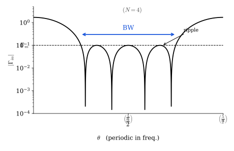
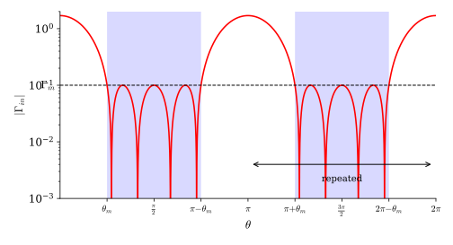
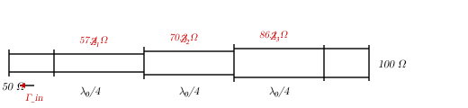
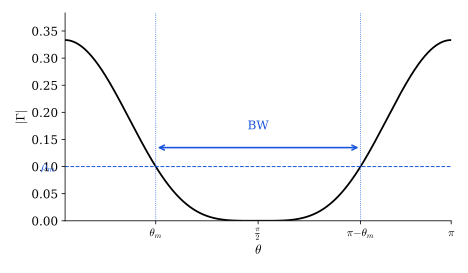

5 Quarter-Wave Multisection Impedance Transformers
5.1 Chebyshev Transformer
The Chebyshev response is optimum in the sense of widest bandwidth against an acceptable ripple \(\Gamma_m\).

- Passband \(\theta \in [\theta_m,\, \pi - \theta_m]\): \(|\Gamma_{in}| \le \Gamma_m\) with equiripple — all \(N\) ripple peaks touch exactly \(\Gamma_m\).
- Outside the passband \(|\Gamma_{in}|\) grows as a Chebyshev polynomial — faster than any other equal-ripple design of the same order.
- \(\theta = \pi/2\) is the centre (\(\lambda/4\) sections); the response repeats periodically in frequency.
5.2 Chebyshev Polynomials of the First Kind
\(T_n(x)\) — Chebyshev polynomial of the first kind, order \(n\):
\[T_0(x) = 1, \quad T_1(x) = x, \quad T_2(x) = 2x^2 - 1, \quad T_3(x) = 4x^3 - 3x, \quad T_4(x) = 8x^4 - 8x^2 + 1\]
Recursive relation:
\[T_k(x) = 2x\,T_{k-1}(x) - T_{k-2}(x)\]
Key properties:
- \(|T_n(x)| \le 1\) if \(|x| \le 1\)
- \(T_n(1) = 1\), \(\quad T_n(-1) = (-1)^n\)
- \(|T_n(0)| = \begin{cases} 0 & n \text{ odd} \\ 1 & n \text{ even} \end{cases}\)
Trigonometric identity — for \(|x| \le 1\), write \(x = \cos\theta\):
\[T_n(\cos\theta) = \cos(n\theta)\]
This can be verified by induction using the recursive relation. Examples:
\[T_2(\cos\theta) = 2\cos^2\theta - 1 = \cos 2\theta\] \[T_3(\cos\theta) = 4\cos^3\theta - 3\cos\theta = \cos 3\theta\]
Hyperbolic identity — for \(|x| > 1\), write \(x = \cosh\theta\):
\[T_n(\cosh\theta) = \cosh(n\theta)\]
The two identities show why \(T_n\) is bounded by 1 in \([-1,1]\) (oscillates like cosine) but grows without bound outside (grows like cosh). This is exactly the behaviour needed for equiripple passband with rapid out-of-band rejection.
5.3 Design Constraints
For broadband impedance matching the system engineer specifies:
- Bandwidth: \(\theta \in [\theta_m,\; \pi - \theta_m]\), centred at \(f_0\) where all sections are \(\lambda/4\)
- \(\theta_0 = \pi/2\) at the centre frequency \(f_0\)
- \(\Gamma_m\): maximum allowed reflection (ripple) within the passband
The number of \(\lambda/4\) sections \(N\) is a design parameter — chosen by the designer.
Since \(\theta = \beta\ell\) and \(\ell = \lambda_0/4\):
\[\theta_0 = \beta \cdot \frac{\lambda_0}{4} = \frac{\omega}{v_p}\cdot\frac{\lambda_0}{4} = \frac{2\pi f_0}{v_p}\cdot\frac{v_p}{4f_0} = \frac{\pi}{2}, \qquad \beta = \frac{\omega}{v_p}\]
(\(v_p\) is assumed constant across the band.)
The response repeats periodically in \(\theta\) (hence in frequency):

5.4 Connecting the Cosine Expansion to the Chebyshev Polynomial
Starting from the small-reflection result for the \(N\)-section symmetric transformer:
\[\Gamma_{in} \simeq \Gamma_0 + \Gamma_1\,e^{-j2\theta} + \cdots + \Gamma_N\,e^{-j2N\theta}\]
Real-load simplification. If \(Z_L = R_L > Z_0\) is real, then all \(\Gamma_k\) can be taken real and positive (\(\rho_k > 0\)), because the imaginary part of the load can always be tuned out:
\[\Gamma_{in} \simeq \rho_0 + \rho_1\,e^{-j2\theta} + \cdots + \rho_N\,e^{-j2N\theta}, \qquad \rho_k > 0\]
Symmetry constraint (\(\rho_k = \rho_{N-k}\)):
\[\rho_0 = \rho_N, \quad \rho_1 = \rho_{N-1}, \quad \rho_2 = \rho_{N-2}, \quad \ldots\]
Factoring out \(e^{-jN\theta}\) and pairing conjugate terms collapses the series into the cosine form derived earlier:
\[\Gamma_{in} \simeq 2\,e^{-jN\theta}\!\left(\rho_0\cos N\theta + \rho_1\cos(N-2)\theta + \cdots\right)\]
Chebyshev assignment. Using \(T_n(\cos\theta) = \cos(n\theta)\) and the identity \(\cos 2\theta = T_2(\cos\theta) = 2\cos^2\theta - 1\), each cosine term can be expressed as a Chebyshev polynomial evaluated at \(\cos\theta\). Setting
\[\Gamma_{in}(\theta) = \Gamma_m\,T_N\!\left(\frac{\cos\theta}{\cos\theta_m}\right)\]
automatically produces an equiripple response of level \(\Gamma_m\) in the passband and determines all \(\rho_k\) by matching the polynomial coefficients.
Passband condition. Since \(1/\cos\theta_m = \sec\theta_m\):
\[\left|T_N\!\left(\frac{\cos\theta}{\cos\theta_m}\right)\right| \le 1 \quad \text{for } \theta \in [\theta_m,\, \pi-\theta_m]\]
\[\left|\Gamma_m\, T_N\!\left(\sec\theta_m\cos\theta\right)\right| \le \Gamma_m \quad \text{for } \theta \in [\theta_m,\, \pi-\theta_m]\]
This is the desired approximating function for the equiripple matching. The full expression for the input reflection is:
\[\Gamma_{in} = \Gamma_m\,e^{-jN\theta}\,T_N(\sec\theta_m\cos\theta) = 2\,e^{-jN\theta}\!\left(\rho_0\cos N\theta + \rho_1\cos(N-2)\theta + \cdots\right)\]
where \(\sec\theta_m\) is the bandwidth parameter.
Boundary condition at \(\theta = 0\). At DC both the exact and approximate expressions must equal the total mismatch:
\[\Gamma_{in}\big|_{\theta=0} = \frac{Z_L - Z_0}{Z_L + Z_0} = \Gamma_m\, T_N(\sec\theta_m)\]
\[\Gamma_m = \frac{1}{T_N(\sec\theta_m)}\cdot\frac{Z_L - Z_0}{Z_L + Z_0}, \qquad T_N(\sec\theta_m) = \frac{1}{\Gamma_m}\cdot\frac{Z_L - Z_0}{Z_L + Z_0}\]
Specifying any two of \(\{\Gamma_m,\,\theta_m,\,N\}\) determines the third.
The passband edge touchpoints confirm the ripple level:
\[\left|T_N(\sec\theta_m\cos\theta)\right|_{\theta=\theta_m,\;\theta=\pi-\theta_m} = 1 \quad\Longrightarrow\quad \left|\Gamma_m\,e^{-jN\theta}\,T_N(\sec\theta_m\cos\theta)\right|_{\theta=\theta_m,\;\pi-\theta_m} = \Gamma_m\]
Behaviour at \(\theta = \pi/2\) (centre frequency):
\[T_N(\sec\theta_m\cos(\pi/2)) = T_N(0) = \begin{cases} 0 & N \text{ odd} \\ 1 & N \text{ even} \end{cases}\]
So at the centre frequency: \(N\) even \(\Rightarrow |\Gamma_{in}| = \Gamma_m\); \(N\) odd \(\Rightarrow |\Gamma_{in}| = 0\).
Outside the passband the hyperbolic identity applies:
\[T_N(x) = \cosh(N\operatorname{arccosh}(x)), \quad |x| > 1\]
5.5 Design Procedure
Design tables will be provided in EE 428.
Prerequisites:
- \(Z_L \in \mathbb{R}\) — if not, tune out \(X_L\) first
- \(Z_L = R_L > Z_0\) — if not, swap source and load (“\(\rho_k\) becomes negative” otherwise)
Outputs: \(N\) section impedances \(Z_{ch,k}\), each of length \(\ell_0 = \lambda_0/4\).
Given the design parameter \(K\):
\[T_N(\sec\theta_m) = \cosh(N\operatorname{arccosh}(\sec\theta_m)) = K = \frac{1}{\Gamma_m}\cdot\frac{Z_L - Z_0}{Z_L + Z_0}\]
- If \(\theta_m\) is given \(\Rightarrow\) compute \(\Gamma_m = \dfrac{Z_L - Z_0}{Z_L + Z_0}\cdot\dfrac{1}{T_N(\sec\theta_m)}\)
- If \(\Gamma_m\) is given \(\Rightarrow\) compute \(\sec\theta_m = \cosh\!\left(\dfrac{\operatorname{arccosh}(K)}{N}\right)\)
The \(Z_{ch,k}\) values are found by expanding \(T_N(\sec\theta_m\cos\theta)\) in the cosine series and reading off the \(\rho_k\) coefficients, then inverting \(\rho_k \approx \frac{1}{2}\ln(Z_{k+1}/Z_k)\).
5.6 Review: Multisection Matching Summary
\(N\) cascaded \(\lambda_0/4\) line segments connect \(Z_0\) to a real load \(R_L\). The design goal is:
\[|\rho_{in}| = \left|\frac{Z_{in} - Z_0}{Z_{in} + Z_0}\right| \le \rho_m \quad \text{for } \theta \in [\theta_m,\,\pi-\theta_m] \;\longrightarrow\; f \in [f_1, f_2]\]
where \(\theta = \beta\ell = 2\pi f \dfrac{\ell}{v_p}\).
Under the small-reflection assumption, \(\rho_{in} \approx f(\theta)\) — a function of electrical length only. The design task is to:
- Choose an approximation function \(f(\theta)\)
- Fit its parameters to meet \(\rho_m\) over the bandwidth \(\theta_m\)
Design parameters: \(\theta_m\) (bandwidth), \(\rho_m\) (ripple), \(N\) (number of sections) Design output: section impedances \(Z_{ch,k}\), \(k = 1, 2, \ldots, N\), each of length \(\ell_0 = \lambda_0/4\)
Two standard approximation functions:
| Chebyshev (CER) | Butterworth (MF) | |
|---|---|---|
| Response | Equi-ripple | Maximally flat |
| Property | Optimum \(\rho_m\)–\(\theta_m\) relation | Smoothest \(\rho_{in}\) at centre |
| Bandwidth | Widest for a given \(\rho_m\) | Narrower than CER |
CER = Constant Equi-Ripple. MF = Maximally Flat. For the same \(N\) and \(\rho_m\), Chebyshev always gives a wider bandwidth than Butterworth.
5.7 Example: 3-Section Equi-Ripple Transformer
Given: \(Z_0 = 50\,\Omega\), \(Z_L = 100\,\Omega\), \(\Gamma_m = 0.05\), \(N = 3\).

Step 1 — cosine expansion for \(N=3\).
\[\Gamma_{in} \simeq 2\,e^{-j3\theta}(\rho_0\cos 3\theta + \rho_1\cos\theta) = \Gamma_m\,e^{-j3\theta}\,T_3(\sec\theta_m\cos\theta)\]
Expanding \(T_3(x) = 4x^3 - 3x\) with \(x = \sec\theta_m\cos\theta\) and applying \(\cos^3\theta = (\cos 3\theta + 3\cos\theta)/4\):
\[T_3(\sec\theta_m\cos\theta) = \sec^3\theta_m\cos 3\theta + (3\sec^3\theta_m - 3\sec\theta_m)\cos\theta\]
Matching coefficients:
\[\rho_0 = \frac{\Gamma_m}{2}\sec^3\theta_m, \qquad \rho_1 = \frac{\Gamma_m}{2}(3\sec^3\theta_m - 3\sec\theta_m)\]
Step 2 — find \(\sec\theta_m\).
\[K = \frac{1}{\Gamma_m}\cdot\frac{Z_L - Z_0}{Z_L + Z_0} = \frac{1}{0.05}\cdot\frac{50}{150} = \frac{20}{3} \approx 6.667\]
\[\sec\theta_m = \cosh\!\left(\frac{\operatorname{arccosh}(K)}{N}\right) = \cosh\!\left(\frac{\operatorname{arccosh}(6.667)}{3}\right) \approx 1.395 \quad\Rightarrow\quad \theta_m = 44.2°\]
Step 3 — reflection coefficients (symmetric: \(\rho_2 = \rho_1\), \(\rho_3 = \rho_0\)):
| \(k\) | \(\rho_k\) | Formula |
|---|---|---|
| 0 | 0.069 | \(\rho_0 = (Z_1 - Z_0)/(Z_1 + Z_0)\) |
| 1 | 0.101 | \(\rho_1 = (Z_2 - Z_1)/(Z_2 + Z_1)\) |
| 2 | 0.101 | \(\rho_2 = \rho_1\) (symmetry) |
| 3 | 0.075 | \(\rho_3 = (Z_L - Z_3)/(Z_L + Z_3)\) |
Step 4 — section impedances:
\[Z_1 = Z_0\,\frac{1+\rho_0}{1-\rho_0} = 57.4\,\Omega, \quad Z_2 = Z_1\,\frac{1+\rho_1}{1-\rho_1} = 70.3\,\Omega, \quad Z_3 = Z_2\,\frac{1+\rho_2}{1-\rho_2} = 86.1\,\Omega\]
Check: \(\rho_3 = (Z_L - Z_3)/(Z_L + Z_3) = 0.075 \;\Rightarrow\; Z_L \approx 98.9\,\Omega\) (not exactly 100 Ω — small error from the small-reflection approximation).
5.8 MF Impedance Transformer (Butterworth–Binomial)
The maximally flat (MF) response is constructed from:
\[\Gamma = A\!\left(1 + e^{-j2\theta}\right)^N\]
At the centre frequency \(\theta_0 = \pi/2\) (\(\ell = \lambda_0/4\)) the response and all its first \(N-1\) derivatives vanish:
\[\Gamma(\theta_0) = 0, \qquad \frac{\partial \Gamma}{\partial \theta}\bigg|_{\theta_0} = 0, \qquad \frac{\partial^k \Gamma}{\partial \theta^k}\bigg|_{\theta_0} = 0 \quad k = 1, 2, \ldots, N-1\]
This is the definition of maximally flat — the “smoothest” possible \(|\rho_{in}|\) around \(f_0\).

5.8.1 Closed-Form Expression
Factoring \(e^{-jN\theta}\) from the binomial:
\[\Gamma = A\!\left(1 + e^{-j2\theta}\right)^N = A\,e^{-jN\theta}\!\left(e^{j\theta}+e^{-j\theta}\right)^N = A\cdot 2^N\,e^{-jN\theta}\cos^N\theta\]
\[|\Gamma| = A\cdot 2^N\cos^N\theta\]
Boundary condition at \(\theta = 0\):
\[\Gamma_{in}\big|_{\theta=0} = \frac{Z_L - Z_0}{Z_L + Z_0} = A\cdot 2^N \quad\Longrightarrow\quad A = \frac{1}{2^N}\cdot\frac{Z_L - Z_0}{Z_L + Z_0}\]
To find the section impedances, expand in the cosine series (small-reflection assumption):
\[\Gamma_{in} = e^{-jN\theta}\cdot 2\!\left(\rho_0\cos N\theta + \cdots\right)\]
and match coefficients with \(A\cdot 2^N e^{-jN\theta}\cos^N\theta\).
Unlike Chebyshev, the maximally flat design has no equiripple level to specify. To find the bandwidth, choose \(\rho_m\) and solve \(A\cdot 2^N\cos^N\theta_m = \rho_m\) for \(\theta_m\), then compare with the Chebyshev result.
5.8.2 Example: \(N=2\), \(Z_L = 100\,\Omega\), \(Z_0 = 50\,\Omega\)
\[\Gamma_{in} \simeq 2e^{-j2\theta}\!\left(\rho_0\cos 2\theta + \tfrac{1}{2}\rho_1\right) = A\,e^{-j2\theta}\cdot 4\cos^2\theta\]
\[A = \frac{1}{4}\cdot\frac{100-50}{100+50} = \frac{1}{4}\cdot\frac{1}{3} = \frac{1}{12}\]
Matching the cosine expansion \(4\cos^2\theta = 2\cos 2\theta + 2\):
\[\rho_0 = A\cdot\frac{1}{2} = \frac{1}{12}\cdot\frac{1}{2} \cdot 2= \frac{1}{12}, \qquad \rho_1 = \frac{1}{6}\]
Section impedances:
\[Z_1 = Z_0\,\frac{1+\rho_0}{1-\rho_0} = 59.1\,\Omega, \qquad Z_2 = Z_1\,\frac{1+\rho_1}{1-\rho_1} = 82.7\,\Omega\]
Check: \(Z_L \approx 97.8\,\Omega \ne 100\,\Omega\) — small error from the small-reflection approximation.
5.8.3 Comparison with Chebyshev (Exercise)
For \(\rho_m = 0.05\) find \(\theta_m\) for the MF design and compare with Chebyshev:
| \(N=2\) MF | \(N=3\) MF | Chebyshev | |
|---|---|---|---|
| \(\theta_m\) | \(67°\) | \(58°\) | — |
| \(\pi - \theta_m\) | \(113°\) | \(122°\) | — |
| Fractional BW (\(f_2/f_1\)) | \(113°/67°\) | \(122°/58°\) | wider |
Fractional bandwidth \(\text{FBW} = f_2/f_1 = (\pi - \theta_m)/\theta_m\). Chebyshev always gives a wider FBW than MF for the same \(N\) and \(\rho_m\).
5.9 N=3 Design Comparison: Equi-Ripple vs Maximally Flat
For \(Z_0 = 50\,\Omega\), \(Z_L = 100\,\Omega\), \(N = 3\):
| \(Z_1\,(\Omega)\) | \(Z_2\,(\Omega)\) | \(Z_3\,(\Omega)\) | \(Z_L^{\text{approx}}\,(\Omega)\) | |
|---|---|---|---|---|
| Equi-Ripple (SRA) | 57.41 | 70.31 | 86.11 | 98.9 |
| Maximally Flat (SRA) | 54.35 | 69.88 | 89.84 | 97.7 |
The last column is expected to be \(100\,\Omega\) — the deviation is due to the small-reflection approximation.
The more accurate formula uses the logarithmic approximation for each section coefficient:
\[\rho_k = \frac{Z_{k+1} - Z_k}{Z_{k+1} + Z_k} \approx \frac{1}{2}\ln\!\left(\frac{Z_{k+1}}{Z_k}\right)\]
Using exact design tables (ln-based):
| \(Z_1\,(\Omega)\) | \(Z_2\,(\Omega)\) | \(Z_3\,(\Omega)\) | \(Z_L^{\text{approx}}\,(\Omega)\) | |
|---|---|---|---|---|
| ln MF | 54.52 | 70.7 | 91.68 | 99.98 |
| ln ER | 57.38 | 70.7 | 87.1 | 99.96 |
More than 5–6 sections is generally not realizable in practice — fabrication tolerances and physical coupling between sections make higher-order designs unreliable.